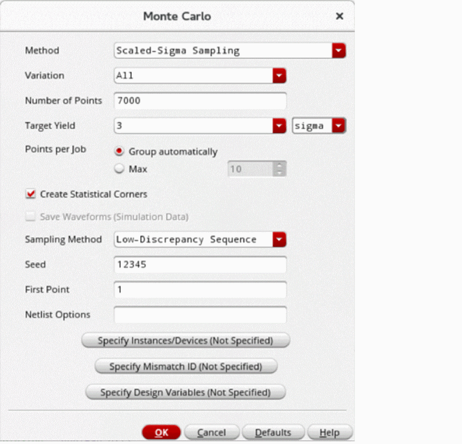
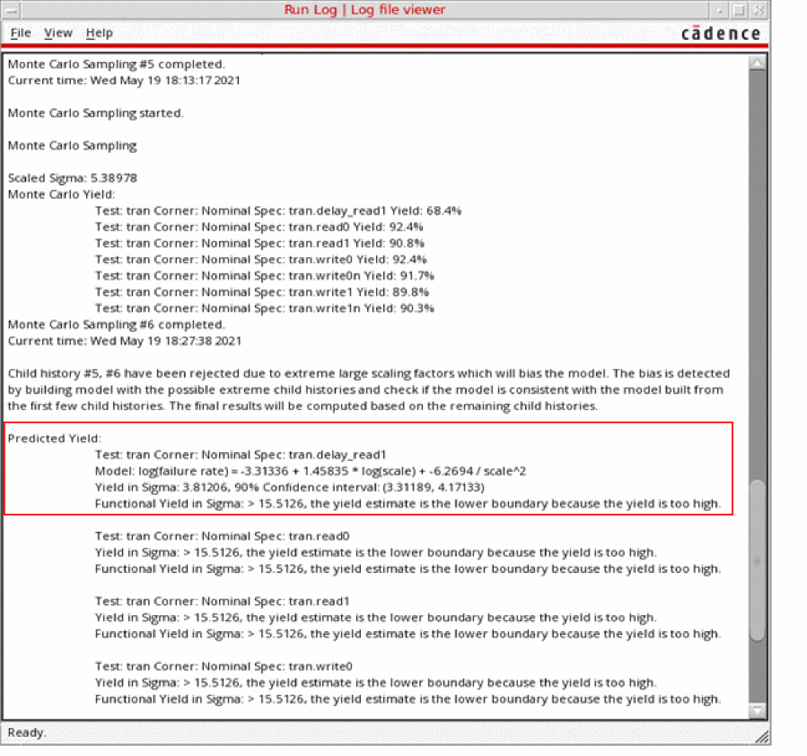

Running the Scaled-Sigma Sampling Method
Before you run the Scaled-Sigma Sampling (SSS) method, ensure that the following environment variable is set to t:
envSetVal("maestro.monte" "showMethodScaledSigmaSampling" 'boolean t)
- Open your design in ADE Assembler or ADE Explorer.
- From the Run Mode drop-down list, select Monte Carlo Sampling.
-
Click the Simulation Options command.
The Monte Carlo form opens.
 - In the What is the yield requirement? field, .
- From the Method drop-down list, select Scaled-Sigma Sampling.
- In the Target Yield field, select a value greater than 3 sigma.
-
In the The Number of Points field, specify the number of points you want to run. The default value is
7000.
This total number of points are divided across all of the scaled runs. Increasing the number of points improves accuracy and reduces the confidence interval of the yield estimate. If there are7scaled Monte Carlo iterations, and number of points =7000, then each scaled iteration simulates1000points. -
In the Max Scaling Factor field, specify the maximum scaling factor to be used for the Scaled-Sigma Sampling method. You can specify a value between 3–7. By default, this field is set to
7, which means that seven child histories using seven different scaling factors will be generated.
This field is hidden by default. You can set the enableMaxScalingFactorForSSS environment variable totto view this field. - Select the Create Statistical Corners check box if you want to create statistical corners. When this option is selected, the task selection in the Guided Mode is changed to Create statistical corners.
- From the Sampling Method drop-down list, select one of the following options: Low-Discrepancy Sequence, Latin Hypercube, or Random.
- Click OK to close the Monte Carlo form.
- Click Run Simulation to run the Monte Carlo simulation.
The Run Log opens, displaying the important information about the run.

Run Log Information of the Scaled-Sigma Sampling Method
The Run Log of the in the Scaled-Sigma Sampling method reports the following information for each output:
-
The 90% confidence interval of the yield estimate in parenthesis. For example, (
3.31189,4.17133) is the 90% confidence interval fordelay_read1, as shown in the figure above. -
K-Sigma target value, where K is the target yield specified on the Monte Carlo run options form. You can consider this target for the outputs to get K sigma performance of this design.
- The functional yield in sigma value, which is an estimate based on a functional pass or fail criteria. A failed point is counted only when the simulation or measurement evaluation fails.
- The model file (log failure) shows the internal model used to predict the failure rate. You can use this to inspect the model used for SSS algorithm.
-
For the range and tolerance specifications, the output log prints the two confidence intervals in the following format:
Test: opamp090:full_diff_opamp_AC:1 Corner: Nominal Spec: opamp090:full_diff_opamp_AC:1.Current
Yield in Sigma: -367.446e-3, 90% Confidence interval: (-553.439e-3, -181.885e-3)
4 sigma target: (0.00712165, 0.00713843), 90% Confidence intervals for low and high targets: (0.00712051, 0.00712278) (0.00713749, 0.00713916)
The model file (log failure) and K sigma target values are not reported for outputs when a model cannot be built either because the yield is too high or due to a failure in the model building process.
Related Topics
The Scaled-Sigma Sampling Method
Yield View of the Scaled-Sigma Sampling Method
Plotting a Normal Quantile Graph for the Scaled-Sigma Sampling Method
Return to top